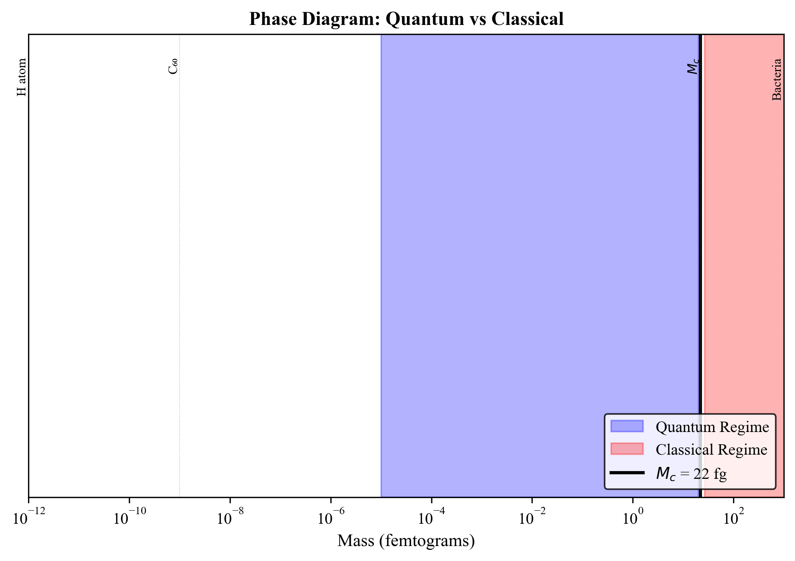
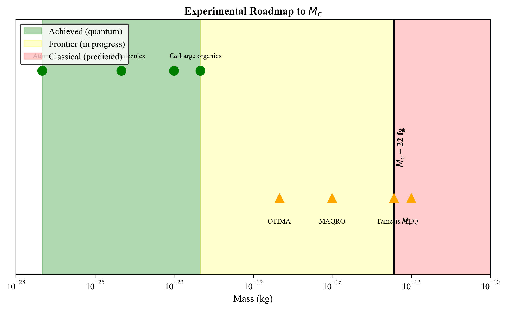

Testing the Tamesis Step Function vs CSL/GRW Smooth Decay
Douglas H. M. Fulber
TARDIS Program • Stage 4: The Universe Equation • January 2026
Abstract
We simulate the quantum-to-classical transition predicted by the Tamesis Action and compare it
with mainstream models (CSL, GRW). The key difference: Tamesis predicts a step function
at the critical mass $M_c = 2.2 \times 10^{-14}$ kg, while CSL/GRW predict smooth exponential decay.
This distinction is experimentally testable with current technology.
1. The Central Prediction
The Tamesis collapse term contains a Heaviside step function:
This produces a discontinuous transition at $M = M_c$.
KILLER PREDICTION:
Interference visibility drops as a step at $M_c$, not a smooth exponential.
2. Visibility Comparison
Figure 1: Interference visibility vs mass. Tamesis (red): step at $M_c$.
CSL/GRW (blue, green): smooth decay.
Model
Transition
Testable
Tamesis
Step at $M_c = 22$ fg
Yes
CSL
Smooth, $\propto e^{-\lambda N^2}$
Yes
GRW
Smooth, $\propto e^{-\lambda N}$
Yes
3. Coherence Time
Figure 2: Coherence time vs mass. Below $M_c$: stable quantum. Above: instant collapse.
4. Phase Diagram

Figure 3: Sharp boundary between quantum (blue) and classical (red) regimes at $M_c$.
5. Experimental Roadmap

Figure 4: Current status and path to testing $M_c$. Green: confirmed quantum.
Yellow: frontier. Red: predicted classical.
Experiment
Mass Range
Status
C₆₀ interferometry
$10^{-24}$ kg
DONE
OTIMA
$10^{-18}$ kg
In Progress
MAQRO (ESA)
$10^{-16}$ kg
Proposed
TEQ
$10^{-13}$ kg
Proposed
6. Conclusion
The Tamesis Action makes a unique, falsifiable prediction: interference visibility
drops abruptly at $M_c = 2.2 \times 10^{-14}$ kg. Current experiments are approaching
this mass scale. Detection of a step transition would confirm Tamesis; observation of
smooth decay would falsify it.